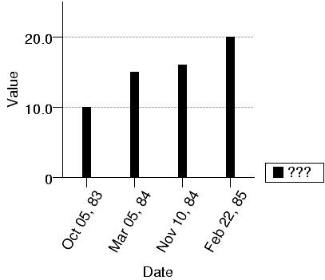

| PyChart |
| PyChart |
The basic function of PyChart is to plot sample data in a variety of
ways. Sample data are simply a sequence of sequences,
where the term "sequence" is a Python jargon for either a tuple
(comma-separated numbers or strings enclosed in parenthesis, e.g.,
(5, 10, 15)) or a list
(comma-separated numbers or strings enclosed in square brackets, e.g.,
[5, 10, 15]). Data
are given to plots through the "data" attribute of a plot object:
l = line_plot.T(data=[(10,20), (11,38), (12,29)], xcol=0, ycol=1)
In the above example, three sample points will be drawn along with line
segments that connect them: (10, 20) - (11, 38) - (12, 29).
Attribute xcol tells the locations of X values within data (the
first column of each sample in data), and ycol similarly
tell the locations of Y values (the last column of each sample in
data). A sample point can contain None, in which case
it is ignored.
data = [(10, 20, 21), (11, 38, 22), (13, None, 15), (12, 29, 30)] l1 = line_plot.T(data=data, xcol=0, ycol=1) l2 = line_plot.T(data=data, xcol=0, ycol=2)
The above example is equivalent to:
l1 = line_plot.T(data=[(10, 20), (11, 38), (12, 29)], xcol=0, ycol=1) l2 = line_plot.T(data=[(10, 21), (11, 22), (13, 15), (12, 30)], xcol=0, ycol=1)
Module chart_data provides several functions for generating,
reading, or transforming samples.
| path, delim = ',') |
readline() method.
Empty lines and lines beginning with "#" are ignored. Parameter delim specifies how a line is separated into values. If it does not contain the letter "%", then delim marks the end of a value. Otherwise, this function acts like scanf in C:
chart_data.read_csv('file', '%d,%s:%d')
| delim, lines) |
fd = open("foo", "r")
data = chart_data.read_str(",", fd.readlines())
| path, data) |
write() method.
| f, from, to, step) |
>>> chart_data.func(math.sin, 0, math.pi * 4, math.pi / 2) [(0, 0.0), (1.5707963267948966, 1.0), (3.1415926535897931, 1.2246063538223773e-16), (4.7123889803846897, -1.0), (6.2831853071795862, -2.4492127076447545e-16), (7.8539816339744828, 1.0), (9.4247779607693793, 3.6738190614671318e-16), (10.995574287564276, -1.0)]
| f, data) |
>>> data = [[1,5], [2,10], [3,13], [4,16]] ... chart_data.filter(lambda x: x[1] % 2 == 0, data) [[2,10], [4,16]].
| data, rows...) |
>>> chart_data.extract_rows([[10,20], [30,40], [50,60]], 1, 2) [[30,40],[50,60]]
| data, cols...) |
>>> chart_data.extract_columns([[10,20], [30,40], [50,60]], 0) [[10],[30],[50]]
| data, xcol, ycol, width) |
>>> data = [[10,20], [20,30], [30,50], [40,70], [50,5]] ... chart_data.moving_average(data, 0, 1, 1) [(10, 25.0), (20, 33.333333333333336), (30, 50.0), (40, 41.666666666666664), (50, 37.5)]
[(10, (20+30)/2), (20, (20+30+50)/3), (30, (30+50+70)/3), (40, (50+70+5)/3), (50, (70+5)/2)]
| data, freq_col=1) |
>>> chart_data.median([(10,20), (20,4), (30,5)], 0) 20 >>> chart_data.median([(10,20), (20,4), (30,5)], 1) 5.
| data, xcol, ycollist) |
>>> chart_data.mean_samples([ [1, 10, 15], [2, 5, 10], [3, 8, 33] ], 0, (1, 2)) [(1, 12.5), (2, 7.5), (3, 20.5)]
| data, xcol, ycollist, delta) |
>>> chart_data.stddev_samples([ [1, 10, 15, 12, 15], [2, 5, 10, 5, 10], [3, 32, 33, 35, 36], [4,16,66, 67, 68] ], 0, range(1,5)) [(1, 13.0, 2.1213203435596424, 10.878679656440358, 15.121320343559642), (2, 7.5, 2.5, 5.0, 10.0), (3, 34.0, 1.5811388300841898, 32.418861169915807, 35.581138830084193), (4, 54.25, 22.094965489902897, 32.155034510097103, 76.344965489902904)]
| func, data) |
>>> data = [[10,20], [30,40], [50,60]] ... chart_data.transform(lambda x: [x[0], x[1]+1], data) [[10, 21], [30, 41], [50, 61]]
One of the frequent uses of transform is to convert a date string
to number and back to some other string for display. The next example
does this: it takes the input for date in the format of "10/5/1983", and
displays the graph in the format of "Oct 5, 1983".
../demos/date.py
import sys
import datetime
from pychart import *
def date_to_ordinal(s):
month, day, year = map(int, s.split("/"))
return datetime.date(year, month, day).toordinal()
def format_date(ordinal):
d = datetime.date.fromordinal(int(ordinal))
return "/a60{}" + d.strftime("%b %d, %y")
data = [["10/5/1983", 10], ["3/5/1984", 15],
["11/10/1984", 16], ["2/22/1985", 20]]
data = chart_data.transform(lambda x: [date_to_ordinal(x[0]), x[1]], data)
ar = area.T(x_coord = category_coord.T(data, 0),
y_range = (0, None),
x_axis = axis.X(label = "Date", format = format_date),
y_axis = axis.Y(label = "Value"))
ar.add_plot(bar_plot.T(data = data))
ar.draw()

| PyChart |